Muros y Tabiquerías
Contents
{kind=link}
20. Muros y Tabiquerías#
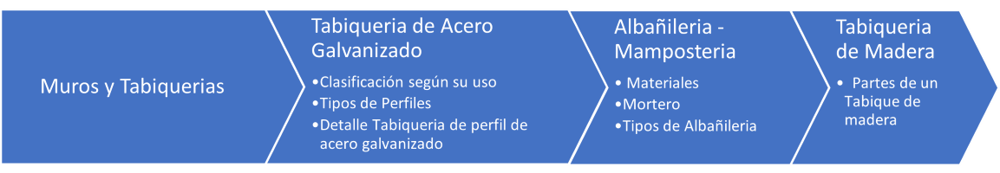{kind=link}
20.1. Tabiquería de Acero Galvanizado#
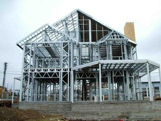{kind=link}
20.1.1. Clasificación según su uso#
20.1.1.1. Estructurales#
Levantar todo lo que sea capaz de soportar y transmitir cargas es su principal finalidad. Es extremadamente resistente. Esto permite levantar hasta tres pisos. La construcción de empresas, industrias, escuelas y otros servicios también se beneficia enormemente.
20.1.1.2. Tabiques#
Este tipo se distingue principalmente por componentes no estructurales que dividen dos habitaciones y solo soportan su propio peso (no soportan cargas).
20.1.1.3. Cielos#
Para la construcción de un acabado de techo bajo o duro, utilice este tipo. Es un componente no estructural.
20.1.2. Tipos de Perfiles#
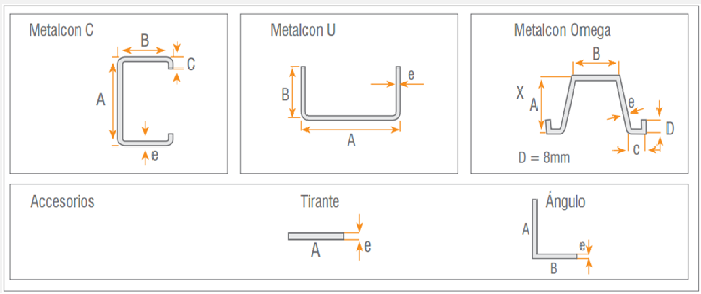 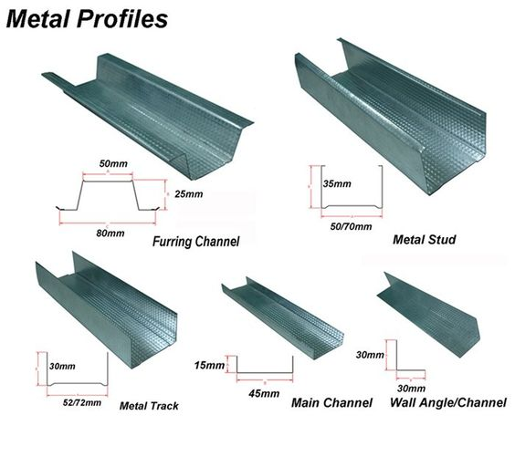{kind=link}
{kind=link}
20.1.3. Detalle Tabiqueria de perfil de acero galvanizado#
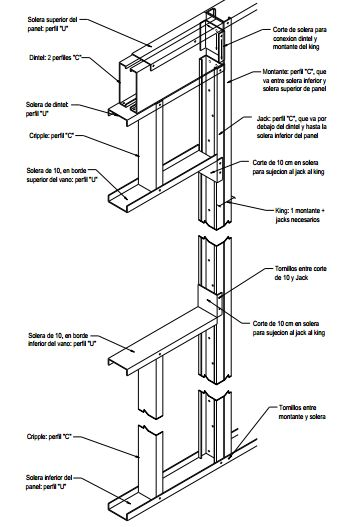 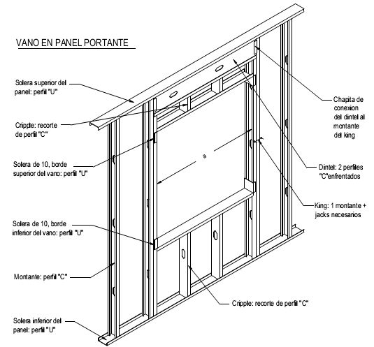{kind=link}
{kind=link}
from IPython.display import YouTubeVideo
YouTubeVideo("vTIRJc1BRcg")
20.2. Albañileria - Mamposteria#

Mamposteria de bloques de hormigon celular.
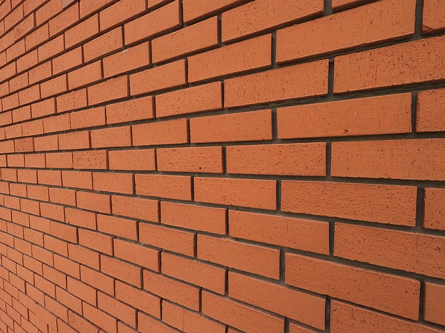{kind=link}
Mamposteria de ladrillo.
20.2.1. Materiales#
20.2.1.1. Ladrillos#
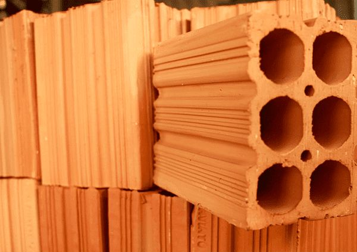{kind=link}
20.2.2. Bloques de hormigón#
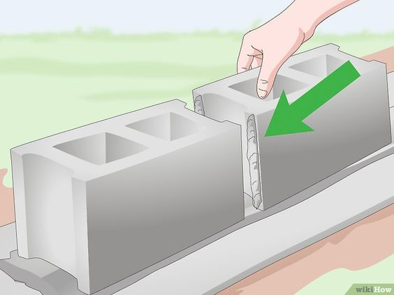{kind=link}
20.2.3. Piedras de diferentes formas y dimensiones#
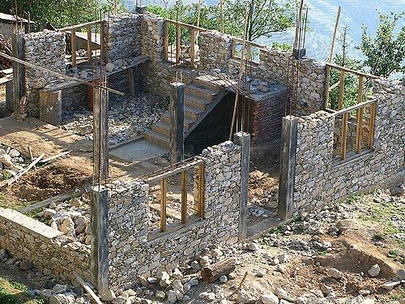{kind=link}
20.2.4. Tipo de Aparejo#
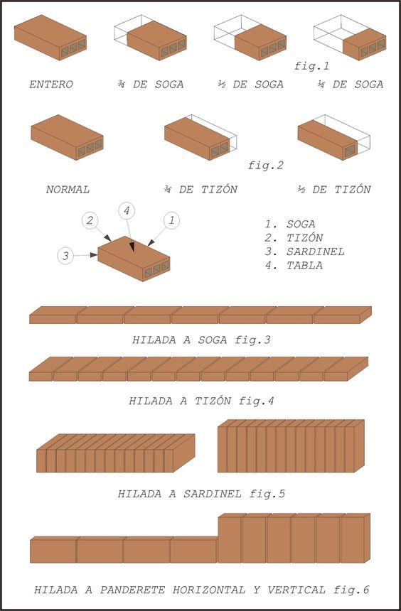{kind=link}
20.2.5. Mortero#
Material de construcción formado por la combinación de arena, cemento y agua; eventualmente puede incorporar aditivos para mejorar algunas de sus propiedades.
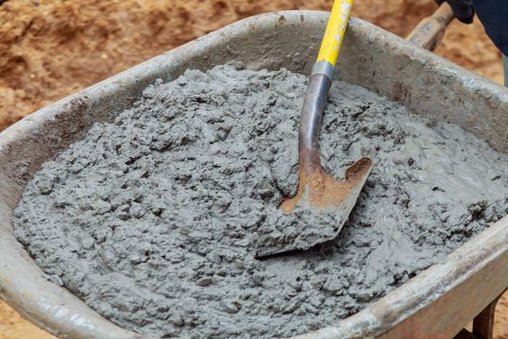{kind=link}
20.2.6. Tipos de Albañileria#
20.2.6.1. Albañileria Simple#
La mampostería sin refuerzo de hormigón solo es resistente a los esfuerzos de compresión.

20.2.6.2. Albañileria Armada#
Mampostería con refuerzos de barras de acero embebidas en el mortero y colocadas en las juntas horizontales y agujeros verticales de las unidades para aumentar la resistencia a los esfuerzos de tracción.
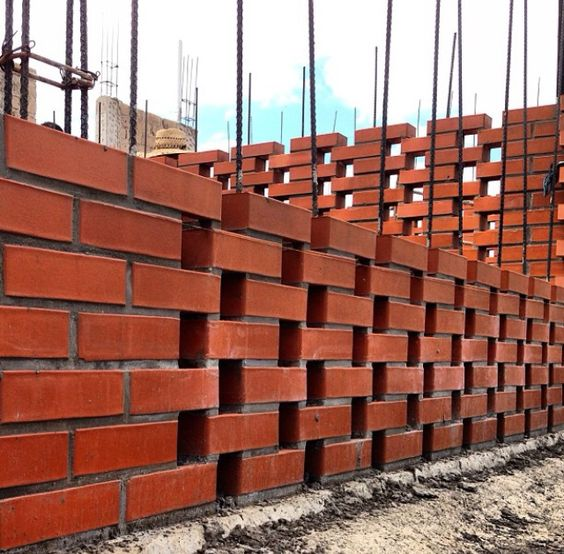{kind=link}
20.2.6.3. Albañileria Confinada#
Una estructura hecha de paños de mampostería que está enmarcada en los bordes por vigas y cadenas de hormigón armado y pilares que ayudan a absorber los esfuerzos de tracción que la mampostería no puede soportar por sí sola.
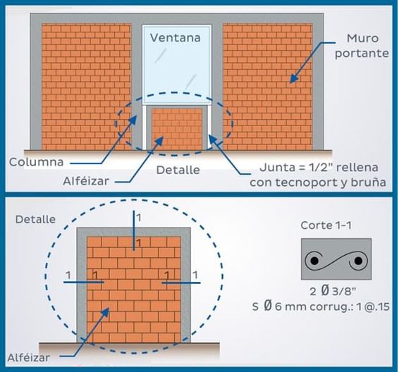{kind=link}
from IPython.display import YouTubeVideo
YouTubeVideo("169RwSZBCPM")
20.3. Tabiquería de Madera#
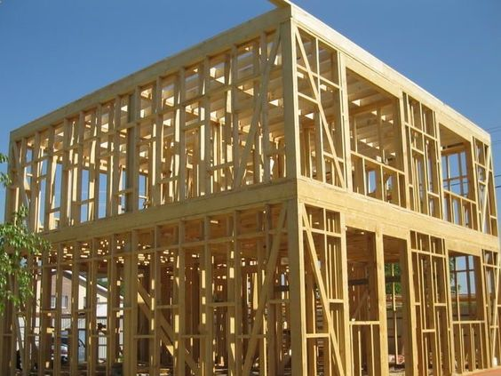 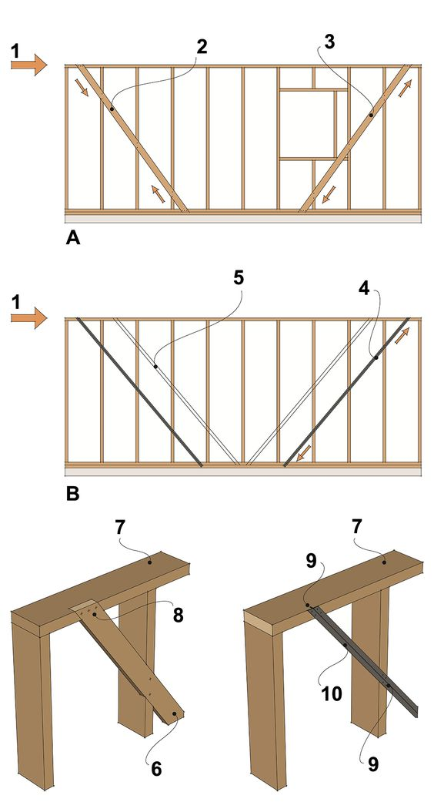 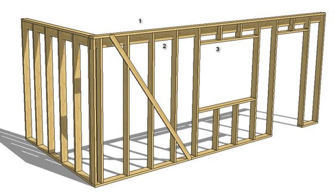{kind=link}
{kind=link}
{kind=link}
20.3.1. Partes de un Tabique de madera#
Solera Inferior: Pieza de madera que se apoya en los cimientos.
Solera Superior: Pieza de madera que se sitúa en la parte superior del tabique.
Pie Derecho o montante: Pieza de madera colocada verticalmente.
Cornijal: Pie derecho situado en la esquina.
Riostras o diagonales: Piezas de madera colocadas en diagonal que evitan que el tabique se deforme.
Dintel: Pieza de madera ubicada sobre el vano de una puerta o ventana.
Alfeizer ó Peana: Pieza de madera ubicada bajo el vano de la ventana.
Muchacho: Pieza vertical ubicada entre el alfeizer y la solera inferior.
Puntal: Pieza Vertical ubicada entre el dintel y la solera superior.
Jamba: Pieza soportante vertical que refuerza el vano y apoya el dintel o alfeizer
{kind=link}
from IPython.display import YouTubeVideo
YouTubeVideo("vE21dBdLPak")
from IPython.display import YouTubeVideo
YouTubeVideo("2FAsv_gC47I")